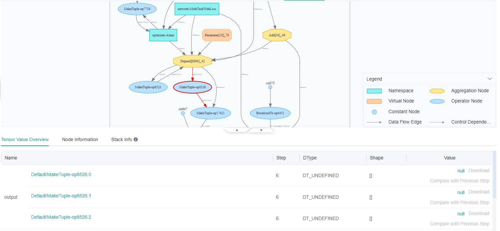
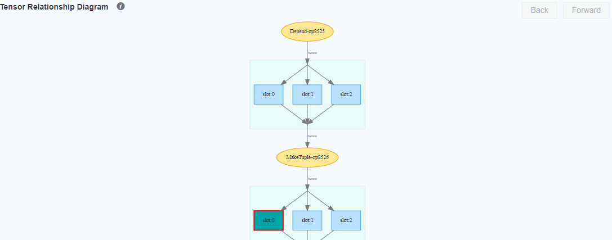
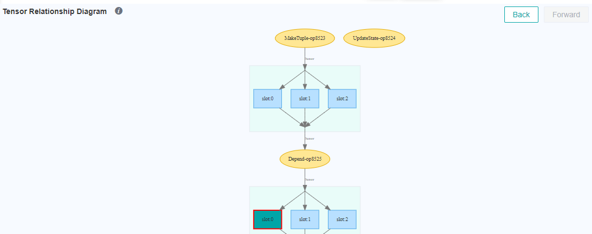

FAQ

Q: When visualizing intermediate features of a neural network, how do I obtain and visualize the outputs of the intermediate layer when inputting an image to the model?
A: The TensorSummary operator provided by MindSpore can be used together with SummaryCollector to collect data of interest. The collected data can be visualized using MindSpore Insight. You can also use ImageSummary to collect the image data. The data volume of tensor is large. So, you need to properly control the value of collect_tensor_freq during collection. Otherwise, a large amount of disk space will be consumed and the running speed will be greatly reduced.
Sample command:
class Net(nn.Cell):
"""Net definition."""
def __init__(self):
super(Net, self).__init__()
...
# Init ImageSummary
self.image_summary = ops.ImageSummary()
# Init TensorSummary
self.tensor_summary = ops.TensorSummary()
def construct(self, data):
# Record image by Summary operator
self.image_summary("image", data)
# Record tensor by Summary operator
self.tensor_summary("tensor", data)
...
return out
For details, see Collecting Summary Record.
Q: What can I do if the system displays a message indicating that port 8080 cannot be used for MindSpore Insight installed on Ubuntu?
A: The possible cause is that port 8080 is occupied by another process (for example, nginx). You can run the mindinsight start --port 8081 --summary-base-dir xxx command to change the port used by MindSpore Insight. Replace 8081 as required.
Q: What can I do if the error message ImportError: libcrypto.so.1.0.0: cannot open shared object file: No such file or directory is displayed in the MindSpore Insight running logs after MindSpore Insight failed to start?
A: You can use “export LD_LIBRARY_PATH=dir:$LD_LIBRARY_PATH” command to export LD_LIBRARY_PATH variable in Linux environment.
Q: What can I do if the error message bash: mindinsight: command not found is displayed in the MindSpore Insight running logs after MindSpore Insight failed to start?
A: This problem occurs when using Python source codes to compile and install in the user-defined path. When install MindSpore Insight by using pip, the executable file will be installed in this path. If the installation directory is not found in the bash environment variable queried by using echo $PATH, the system will not find the installed executable file. You need to use export PATH=$PATH: $YourPythonPath$/bin on the command line to import the path variable.
(Please change $YourPythonPath$ to your installation path). Note: this command is only valid at the current terminal. If you want to make it permanent, please add it to the file ~/.bashrc.
Q: What can I do if the error message No module named 'mindinsight' is displayed in the MindSpore Insight running logs after MindSpore Insight is uninstalled?
A: After MindSpore Insight is started, it becomes a background service. After MindSpore Insight package is uninstalled, the started MindSpore Insight background service will not automatically stop. When the MindSpore Insight background service starts a new process to load data or performs other operations, it will trigger the error message of No module named 'mindinsight' and record it to a log file.
In this case, you can perform either of the following operations:
Reinstall MindSpore Insight and run the
mindinsight stop --port <PORT>command to stop the started MindSpore Insight background service.Run the
kill -9 <PID>command to kill the processes designed by MindSpore Insight.
Q: What can I do if the Google’s Chrome browser prompts the error message ERR_UNSAFE_PORT after MindSpore Insight is successfully started?
A: Chrome browser’s kernel prohibits certain ports from being used as HTTP services. You can add --explicitly-allowed-ports=port in Chrome browser’s configuration. Otherwise you can change the port or browser like IE browser.
Q: What can I do if the error Exeption calling application: Field number 0 is illegal appears on Ascend after MindSpore Insight is successfully started with debugger turning on, and the training script is trying to connecting to debugger?
A: It means the wrong version of Protobuf is installed, please install the right version, see Installing Protobuf Python.
Q: What can I do if the error The debugger offline server module is not found appears after MindSpore Insight is successfully started and trying to turn on the offline debugger?
A: The debugger offline service needs to import the MindSpore. Please install the correct version of MindSpore. For the installation method, please refer to Install MindSpore.
Q: What can I do if the Google’s Chrome browser prompts the error message ERR_CONNECTION_REFUSED after MindSpore Insight is successfully started?
A: Check the firewall policy configuration between the backend server and network devices to ensure that the communication between the browser and MindSpore Insight is not restricted by the configuration rules of relative devices.
Q: When using the debugger, when you click on a namespace or an aggregation node on the graph node details page, prompt appears, show that the direct subnode depth exceeds 70 and cannot be expanded, or Too many nodes to open. How can I view the input and output relationships of the internal nodes?
A: If the node cannot be expanded in the graph nodes details page of the debugger, you can still view the input and output relationships of local nodes in the tensor relationship diagram. As shown in Figure 1, Depend[8899]_42 is an aggregate node with 8899 internal nodes. Click its output node MakeTuple-op8526, and then in the tensor information table below, click null in the value column (if there is a value, it will display view, then click view) to enter the tensor relationship diagram page.
As shown in Figure 2, the tensor relationship diagram shows the tensor of the node MakeTuple-op8526 and its input and output nodes. Double-click one of its input tensors to jump to the tensor relationship diagram of its input node Depend-op8525, as shown in Figure 3.

Figure 1: Aggregation nodes with too many subnodes

Figure 2: The relationship diagram of MakeTuple-op8526

Figure 3: The relationship diagram of Depend-op8525